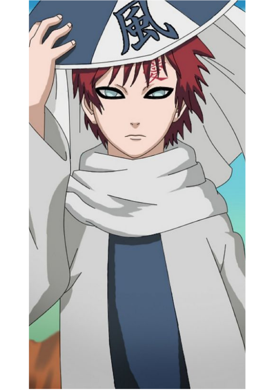
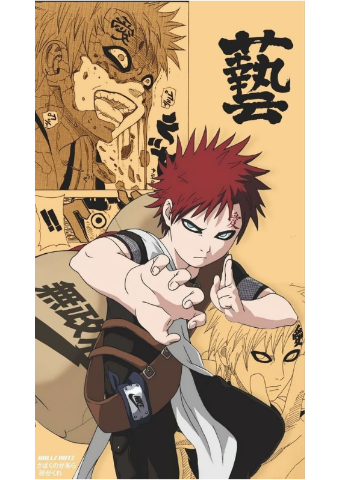
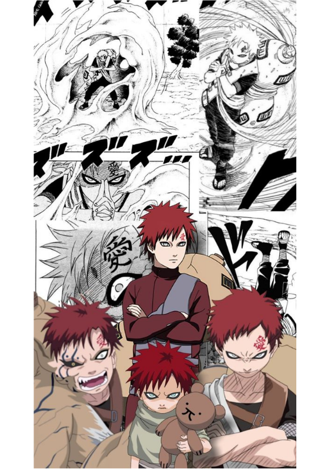
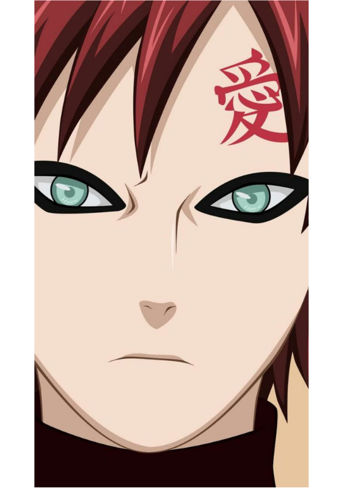

Gaara Da Areia
Gaara da areia é um dos personagens mais marcantes do anime Naruto. Ele é o filho do Quarto Kazekage e o jinchuuriki do Shukaku, o Bijuu de uma cauda.Desde criança, Gaara sofreu com a rejeição e o medo dos habitantes de sua vila, Sunagakure, que o viam como uma arma e uma ameaça. Isso fez com que ele desenvolvesse uma personalidade fria e cruel, que só se importava com a própria existência.
Ele também criou uma defesa de areia que o protegia de qualquer ataque, mas que também o isolava do mundo. No entanto, tudo mudou quando ele conheceu Naruto Uzumaki, outro jinchuuriki que compartilhava de seu sofrimento, mas que escolheu seguir um caminho diferente. Naruto mostrou a Gaara o valor da amizade e da determinação, e o fez perceber que ele não estava sozinho.
A partir daí, Gaara começou a mudar sua visão de si mesmo e dos outros, e se tornou um aliado de Naruto e dos ninjas da Folha. Ele também se reconciliou com seu irmão Kankuro e sua irmã Temari, que passaram a apoiá-lo e respeitá-lo. Com o tempo, Gaara se tornou o Quinto Kazekage, o líder de sua vila, e um dos ninjas mais poderosos e sábios do mundo shinobi.
da areia é um exemplo de superação e redenção, que mostra que é possível mudar o destino e encontrar um sentido na vida. Ele é um personagem complexo e carismático, que conquistou o coração dos fãs de Naruto.




Agora, fique com um rap, do personagem GAARA, do rapper 7Minutoz